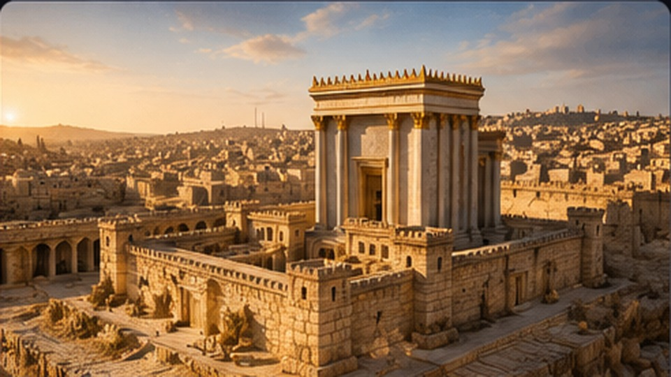
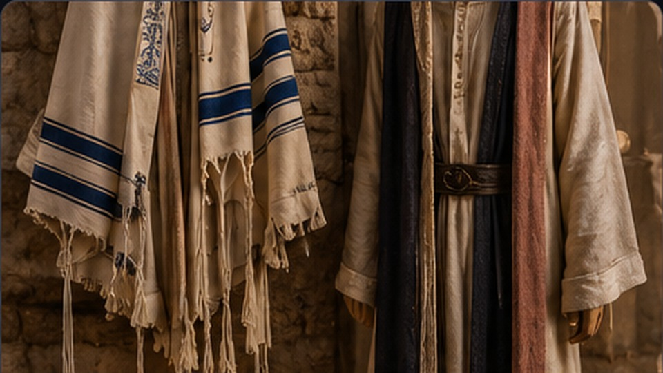
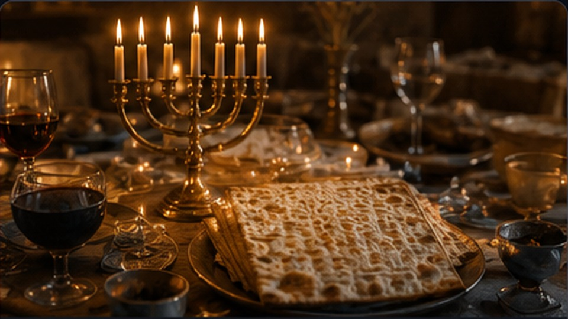
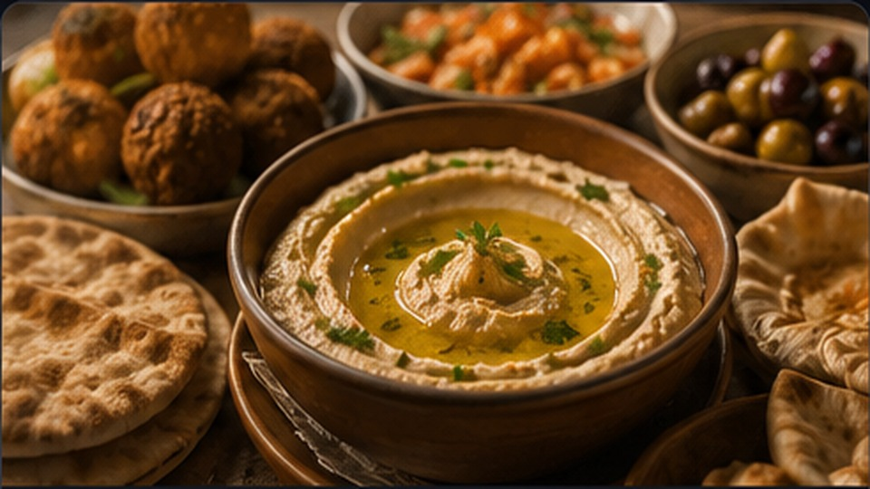

TEOLOGIA NINJA
Cultura e História de Israel
História, costumes, festas, escritos judaicos e vida cotidiana.


Festas e calendário
Shabat, Pessach, Shavuot, Sucot, Purim e Hanucá.
Em construção
Alimentação
Alimentos, leis alimentares e refeições.
Em construçãoVida cotidiana
Família, casamento, educação, trabalho e luto.
Em construção